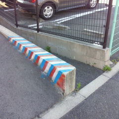

散髪屋の駐車場。
縞模様の
擁壁（ようへき）が
目を引く。
一般的な順列は
赤白青白。
赤と青の間に
無彩色の
白が入る。
ここの場合は
青と赤を
隣接させている。
その理由は不明だ。
勾配の具合や
隣の細い通路との
段差もあって
無地のままでは
人間の眼には
形状認識が
困難なので
ぶつけないように
塗ってみました
という事だろう。
最近の高級な
自動車には
バックモニターが
標準装備されて
いるらしい。
しかし、今はまだ
その映像を人間が
認識して手動で
操作する段階だ。
だから、正確には
半自動車と
言うべきだ。